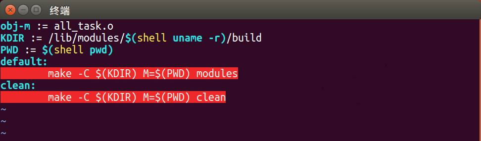
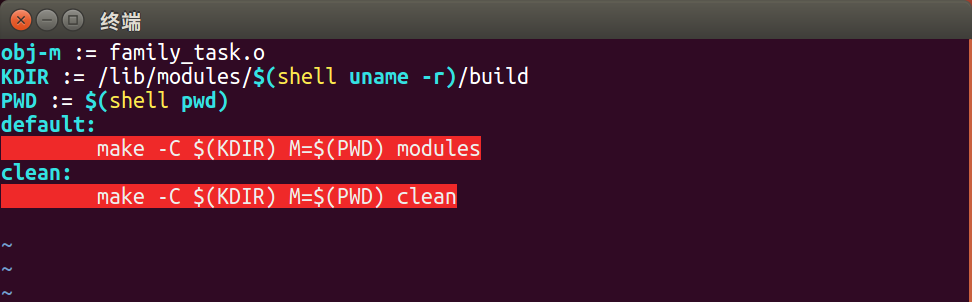

Linux 提供的模块机制能动态扩充 linux 功能而无需重新编译内核，已经广泛应用在 linux 内核的许多功能的实现中。
不知你看到这段话时是否和我一样脱口而出 MD! ZZ! ，毕竟上一个通过重新编译内核扩充 Linux 功能的实验耗时之久令人印象深刻。哪成想今天区区几分钟就和曾经编译几小时达到一样的效果。不禁感先人之伟大，觉自己之智障。废话少说，我们直奔主题！
实验要求
(1) 设计一个模块，要求列出系统中所有内核线程的程序名、PID、进程状态、进程优先级及父进程PID。
(2) 设计一个带参数的模块，其参数为某个进程的 PID 号，该模块的功能是列出该进程的家族信息，包括父进程、兄弟进程和子进程的程序名、PID 号、进程状态。
(3) 请根据自身情况，进一步阅读分析程序中用到的相关内核函数的源码实现。
准备
1 | mkdir os_2 # 新建文件夹 |
模块一(无参)
编辑模块
1 | cd all_task |
1 | // /home/user/os_2/all_task/all_task.c |
编辑 Makefile
1 | vim Makefile |
1 | obj-m := all_task.o |
[*]Caution! make 前是 TAB 而非多个 ,错误缩进会高亮报错且导致编译错误，比如像下面这样

编译模块
1 | make # 编译模块 |
加载模块
1 | insmod all_task.ko # 尝试加载模块，发现权限不够 |
查看结果
1 | dmesg # 在日志文件中查看结果 |
卸载模块
1 | ^C # CTRL+C 退出 |
实验详解
模块二(含参)
编辑模块
1 | cd .. # 返回上一级目录，即 os_2 根目录 |
1 | // /home/user/os_2/family_task/family_task.c |
编辑 Makefile
1 | vim Makefile |
1 | obj-m := family_task.o |
[*]Caution! 再次提醒，make 前是 TAB 而非多个 ,错误缩进会高亮报错且导致编译错误，比如像下面这样

编译模块
1 | make # 编译模块 |
加载模块
1 | su root # 启用 root 权限 |
查看结果
1 | dmesg |
卸载模块
1 | ^C # CTRL+C 退出 |